A New Reign
by Adrian King

This month we stand at the beginning of a New Reign. We will all be glued to our television screens to see the coronation of our new monarch King Charles III.
Some of us will be old enough to remember the last coronation seventy years ago. Others like myself have lived through Queen Elizabeths II reign but were too young to remember the coronation. Family and friends would have been crowded around the small square wooden veneered box in the corner of the room of those who were fortunate enough to own a television set. The box was square because the screen was as deep as it was wide. No 60 inch flat screen televisions in those days.
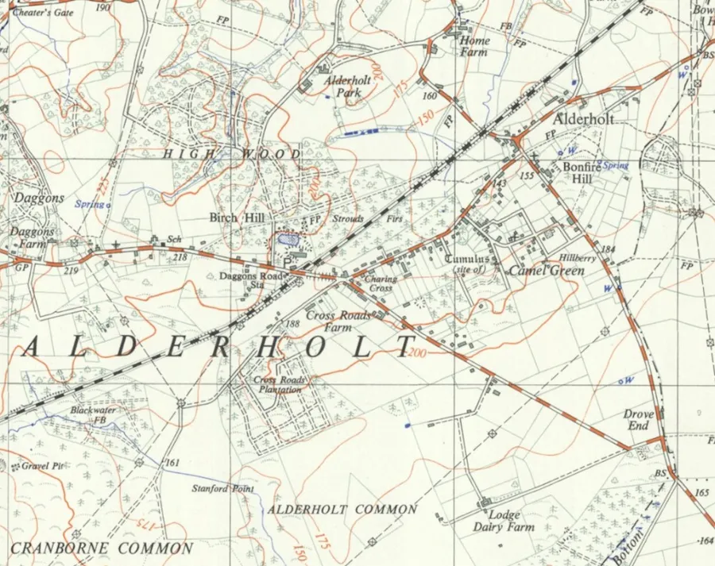
Also there are the remains of an industrial past with brickworks at the Station where Earlswood Drive is now and off Camel Green where Birchwood Park is.
How have things changed in the village in the last seventy years? The answer will depend on the age of the person to which the question is directed. Even a young adult will have seen many changes but not so many for a pupil in St. James First School.
Back in January I was asked to visit St. James First School. Their project for the term was Village Detectives and I was asked to show old pictures of the village alongside more recent ones of the same place so that the young people could see how much things had changed. The presentation stimulated a lot of discussion for the rest of the day.
Some discussion was about the difference at Charing Cross. How if you took a picture now and compared it with a picture that had been taken sixty years ago. It was not until the current picture was shown that the pupils could connect it to the present time.
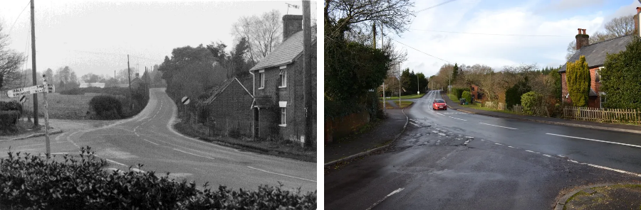
Right — Charing Cross, 6th January 2023.
In the new picture the old railway bridge had been flattened and where at one time there had been fields there was now Churchill Close. Today the only building from sixty years ago is Charing Cottage.
Up until the late 1960’s Alderholt was not a very healthy place to live. Most properties had a septic tank and they were beginning to leach into ground and as many houses had wells the water was getting contaminated.
The contractors Whitehall Civil Engineering Company started installing main drainage in 1971 and that was completed by 1973. In 1973 a Village Plan for future development providing for an ultimate population of 2,400 was prepared and published. Then the planning applications began to come in commencing in 1974 comprising
- Hillbury Rise now Windsor Way
- Earlswood
- Birchwood Park
- Churchill Close
- Silverdale
- Wren Gardens
which were all built in phases. Wren Gardens was the last of the big estates to be completed in the 1990’s.
Gas was first laid to the village in 1976 and the water supply was much improved. Some outlying areas of the parish did not have a reliable electric supply until the mid-1960’s.
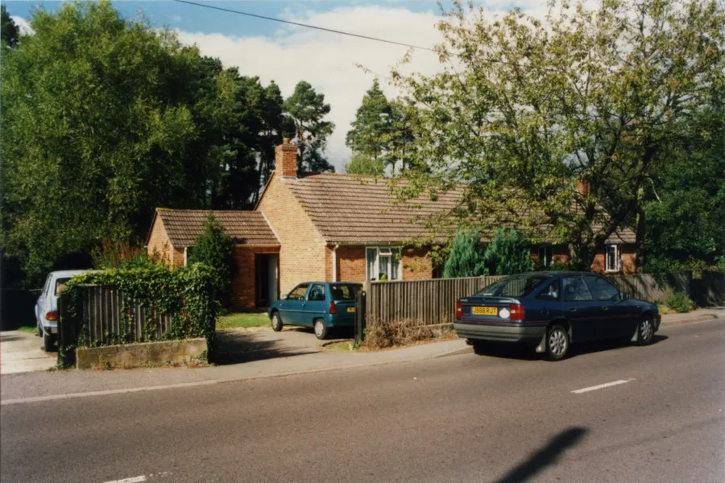
In 1971 the village had a population of 800. By 1981 this had risen to 1710 and by 1991 that had risen to 2880. Over the last 30 years it has stabilized around 3000 people.
Communication has greatly improved. First we had telephones with a pair of twisted copper wires that could connect us to the rest of the world. Then came the mobile networks that reduced the use of the landline for voice communication.
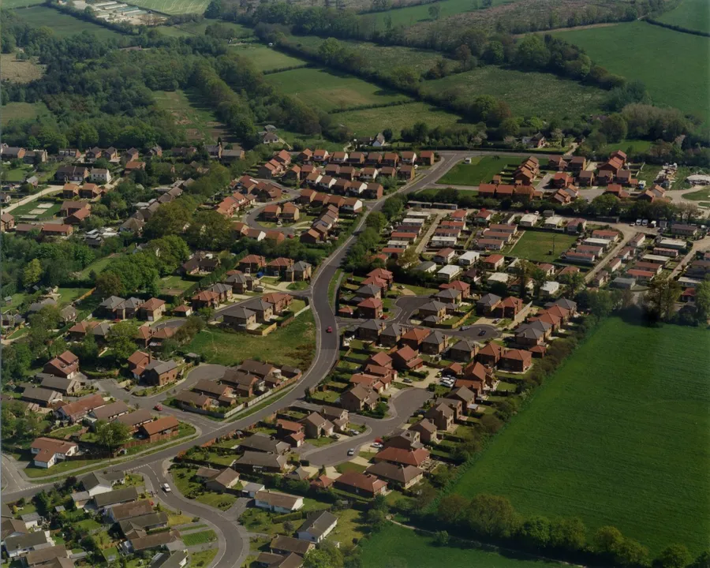
In the picture is Beech Close, Tudor Close, Hazel Close, Saxon Way, Silverdale, Wren Gardens and the Mobile Homes.
The fields in the distance are proposed for gravel extraction. Other fields around the village are prime locations for development.
And now we have the internet but twenty years ago it was dial-up using a modem. We had blistering speeds of 56 kbps. That was too slow so then we had broadband. Somehow they managed to piggyback the signal down the twisted copper pair with even faster speeds of 30 Mbps and higher in most of the village. I can now see my new granddaughter in New Zealand on my phone.
Soon we will have fibre-optic using light with possible speeds of 1 Gbps plus..
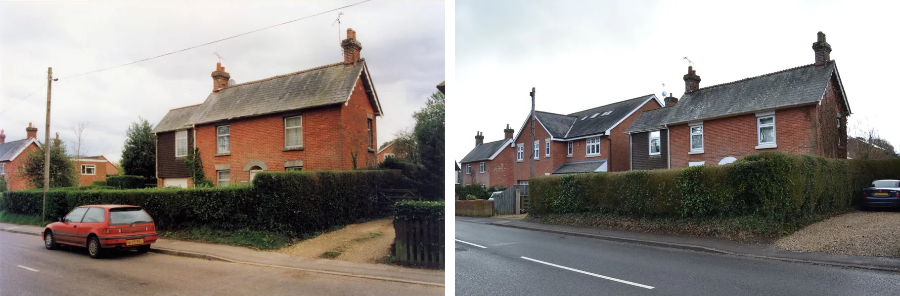
Left — Between 30 and 34 Station Road in the early 1990’s
Right — Taken in 2023 shows that the infill of 32 Station Road has been built between the other two.
More Alderholt Images
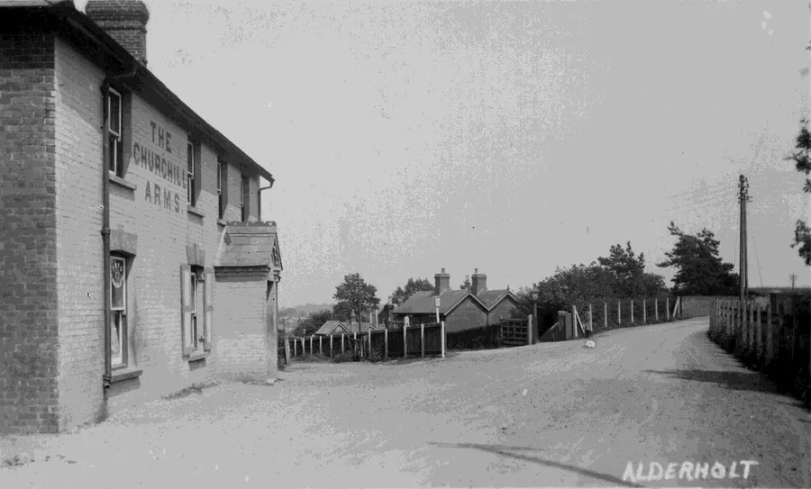
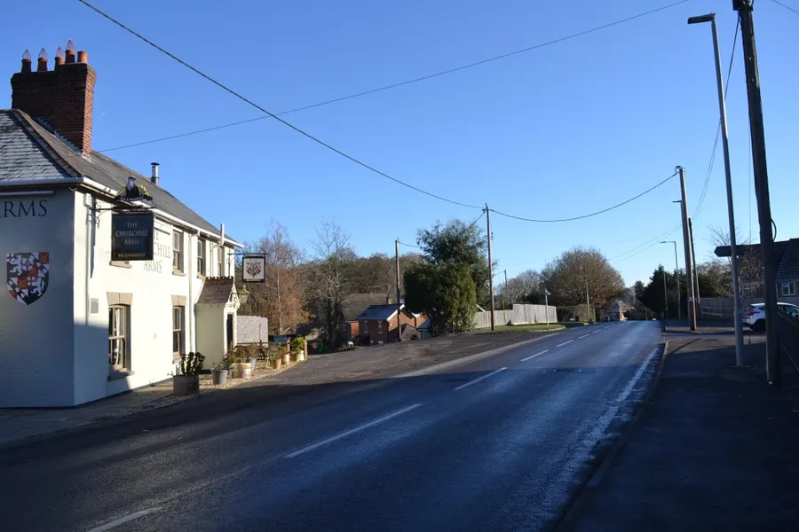
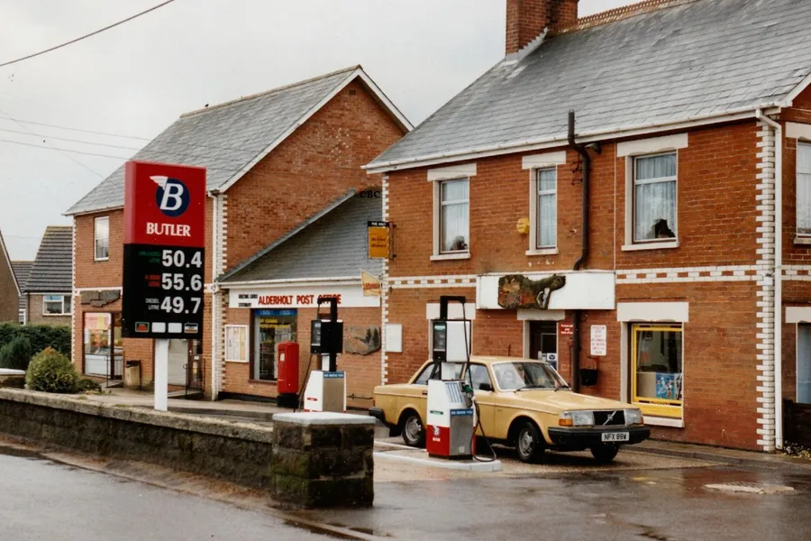
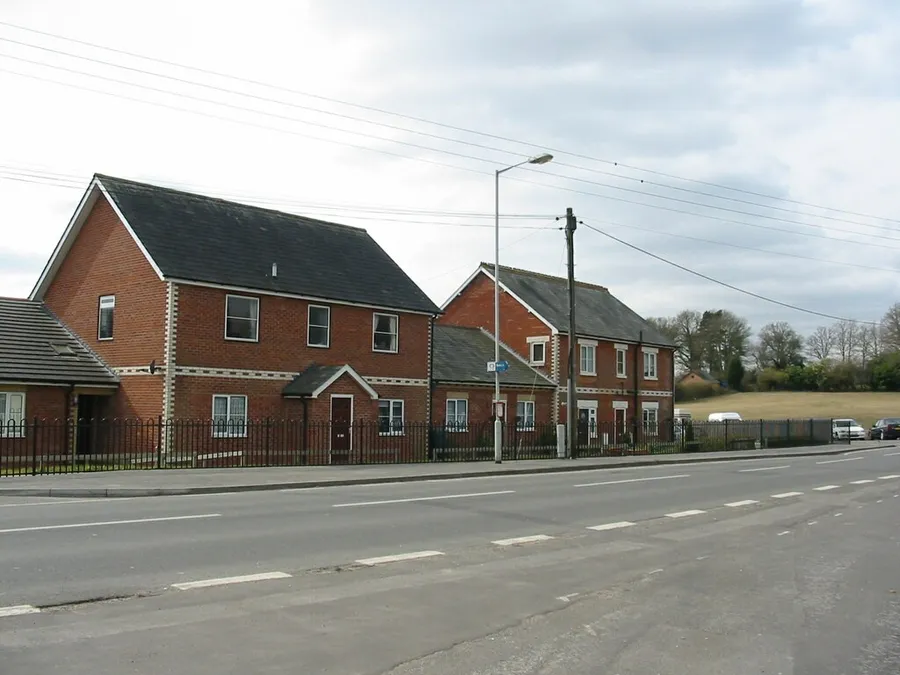
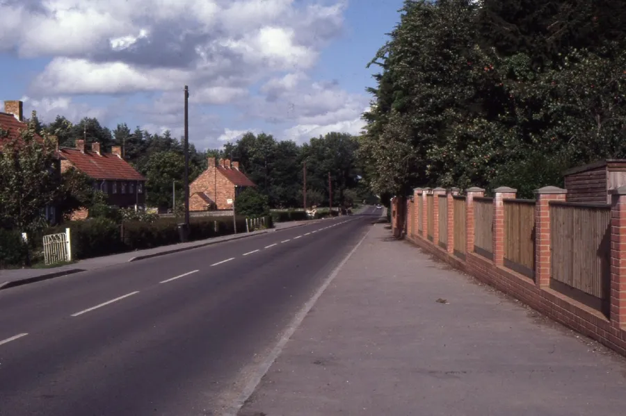
With the upgrading came funds from county, that enabled the building of pavements and the installing of street lighting that we all take for granted.
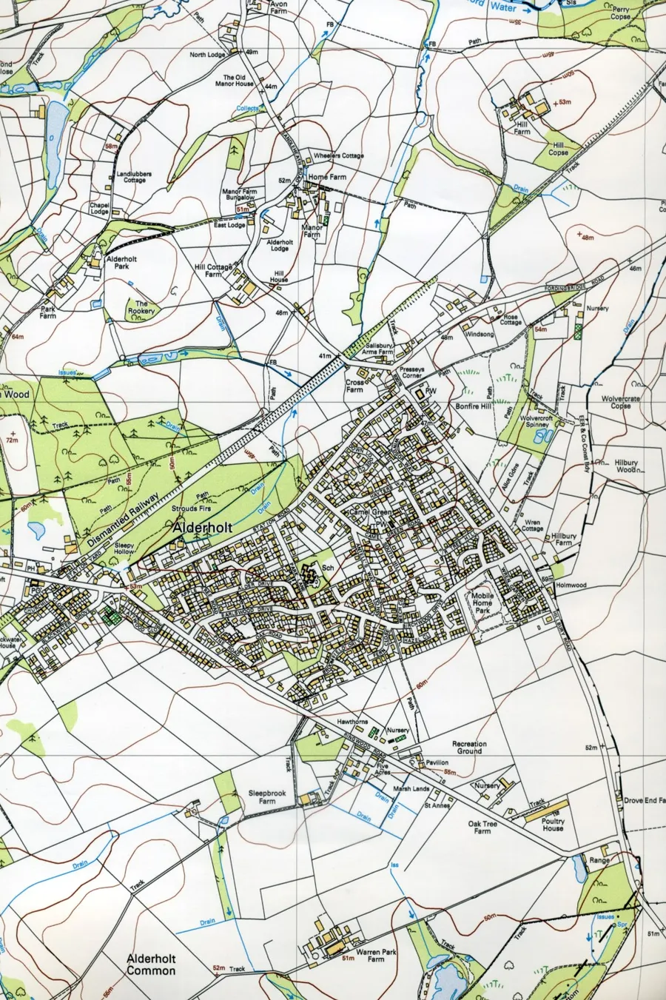
Your Majesty, you have a majestic act to follow, but we wish you every blessing as you commence your reign.